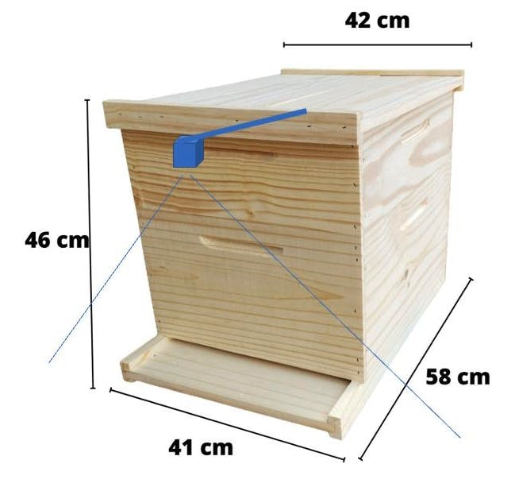

Counting objects with YOLO
Deploying YOLOv8 on Raspberry Pi Zero 2W for Real-Time Bee Counting at the Hive Entrance.”
Introduction
At the Federal University of Itajuba in Brazil, with the master’s student José Anderson Reis and Professor José Alberto Ferreira Filho, we are exploring a project that delves into the intersection of technology and nature. This tutorial will review our first steps and share our observations on deploying YOLOv8, a cutting-edge machine learning model, on the compact and efficient Raspberry Pi Zero 2W (Raspi-Zero). We aim to estimate the number of bees entering and exiting their hive—a task crucial for beekeeping and ecological studies.
Why is this important? Bee populations are vital indicators of environmental health, and their monitoring can provide essential data for ecological research and conservation efforts. However, manual counting is labor-intensive and prone to errors. By leveraging the power of embedded machine learning, or tinyML, we automate this process, enhancing accuracy and efficiency.
This tutorial will cover setting up the Raspberry Pi, integrating a camera module, optimizing and deploying YOLOv8 for real-time image processing, and analyzing the data gathered.
Installing and using Ultralytics YOLOv8
Ultralytics YOLOv8, is a version of the acclaimed real-time object detection and image segmentation model, YOLO. YOLOv8 is built on cutting-edge advancements in deep learning and computer vision, offering unparalleled performance in terms of speed and accuracy. Its streamlined design makes it suitable for various applications and easily adaptable to different hardware platforms, from edge devices to cloud APIs.
Let’s start installing the Ultarlytics packages for local inference on the Rasp-Zero:
- Update the packages list, install pip, and upgrade to the latest:
sudo apt update
sudo apt install python3-pip -y
pip install -U pip- Install the
ultralyticspip package with optional dependencies:
pip install ultralytics[export]- Reboot the device:
sudo rebootTesting the YOLO
After the Rasp-Zero booting, let’s create a directory for working with YOLO and change the current location to it::
mkdir Documents/YOLO
cd Documents/YOLOLet’s run inference on an image that will be downloaded from the Ultralytics website, using the YOLOV8n model (the smallest in the family) at the Terminal (CLI):
yolo predict model='yolov8n' source='https://ultralytics.com/images/bus.jpg'The inference result will appear in the terminal. In the image (bus.jpg), 4 persons, 1 bus, and 1 stop signal were detected:

Also, we got a message that Results saved to runs/detect/predict4. Inspecting that directory, we can see a new image saved (bus.jpg). Let’s download it from the Rasp-Zero to our desktop for inspection:

So, the Ultrayitics YOLO is correctly installed on our Rasp-Zero.
Export Model to NCNN format
An issue is the high latency for this inference, 7.6 s, even with the smaller model of the family (YOLOv8n). This is a reality of deploying computer vision models on edge devices with limited computational power, such as the Rasp-Zero. One alternative is to use a format optimized for optimal performance. This ensures that even devices with limited processing power can handle advanced computer vision tasks well.
Of all the model export formats supported by Ultralytics, the NCNN is a high-performance neural network inference computing framework optimized for mobile platforms. From the beginning of the design, NCNN was deeply considerate about deployment and use on mobile phones and did not have third-party dependencies. It is cross-platform and runs faster than all known open-source frameworks (such as TFLite).
NCNN delivers the best inference performance when working with Raspberry Pi devices. NCNN is highly optimized for mobile embedded platforms (such as ARM architecture).
So, let’s convert our model and rerun the inference:
- Export a YOLOv8n PyTorch model to NCNN format, creating: ‘/yolov8n_ncnn_model’
yolo export model=yolov8n.pt format=ncnn - Run inference with the exported model (now the source could be the bus.jpg image that was downloaded from the website to the current directory on the last inference):
yolo predict model='./yolov8n_ncnn_model' source='bus.jpg'Now, we can see that the latency was reduced by half.

Talking about the YOLO Model
The YOLO (You Only Look Once) model is a highly efficient and widely used object detection algorithm known for its real-time processing capabilities. Unlike traditional object detection systems that repurpose classifiers or localizers to perform detection, YOLO frames the detection problem as a single regression task. This innovative approach enables YOLO to simultaneously predict multiple bounding boxes and their class probabilities from full images in one evaluation, significantly boosting its speed.
Key Features:
Single Network Architecture:
- YOLO employs a single neural network to process the entire image. This network divides the image into a grid and, for each grid cell, directly predicts bounding boxes and associated class probabilities. This end-to-end training improves speed and simplifies the model architecture.
Real-Time Processing:
- One of YOLO’s standout features is its ability to perform object detection in real time. Depending on the version and hardware, YOLO can process images at high frames per second (FPS). This makes it ideal for applications requiring quick and accurate object detection, such as video surveillance, autonomous driving, and live sports analysis.
Evolution of Versions:
- Over the years, YOLO has undergone significant improvements, from YOLOv1 to the latest YOLOv10. Each iteration has introduced enhancements in accuracy, speed, and efficiency. YOLOv8, for instance, incorporates advancements in network architecture, improved training methodologies, and better support for various hardware, ensuring a more robust performance.
- Although YOLOv10 is the family’s newest member with an encouraging performance based on its paper, it was just released (May 2024) and is not fully integrated with the Ultralitycs library. Conversely, the precision-recall curve analysis suggests that YOLOv8 generally outperforms YOLOv9, capturing a higher proportion of true positives while minimizing false positives more effectively (for more details, see this article). So, this work is based on the YOLOv8n.

Accuracy and Efficiency:
- While early versions of YOLO traded off some accuracy for speed, recent versions have made substantial strides in balancing both. The newer models are faster and more accurate, detecting small objects (such as bees) and performing well on complex datasets.
Wide Range of Applications:
- YOLO’s versatility has led to its adoption in numerous fields. It is used in traffic monitoring systems to detect and count vehicles, security applications to identify potential threats, and agricultural technology to monitor crops and livestock. Its application extends to any domain requiring efficient and accurate object detection.
Community and Development:
- YOLO continues to evolve and is supported by a strong community of developers and researchers (being the YOLOv8 very strong). Open-source implementations and extensive documentation have made it accessible for customization and integration into various projects. Popular deep learning frameworks like Darknet, TensorFlow, and PyTorch support YOLO, further broadening its applicability.
- Ultralitics YOLOv8 can not only Detect (our case here) but also Segment and Pose models pre-trained on the COCO dataset and YOLOv8 Classify models pre-trained on the ImageNet dataset. Track mode is available for all Detect, Segment, and Pose models.

In this tutorial, we leverage the power of YOLOv8 exported to NCNN format to estimate the number of bees at a beehive entrance using a Raspberry Pi Zero 2W (Rasp-Zero) in real-time. This setup demonstrates the practicality and effectiveness of deploying advanced machine learning models on edge devices for real-time environmental monitoring.
Exploring YOLO with Python
To start, let’s call the Python Interpreter so we can explore how the YOLO model works, line by line:
python
Now, we should call the YOLO library from Ultralitics and load the model:
from ultralytics import YOLO
model = YOLO('yolov8n_ncnn_model')Next, run inference over an image (let’s use again bus.jpg):
img = 'bus.jpg'
result = model.predict(img, save=True, imgsz=640, conf=0.5, iou=0.3)
We can verify that the result is the same as the one we get running the inference at the terminal level (CLI).
image 1/1 /home/mjrovai/Documents/YOLO/bus.jpg: 640x640 3 persons, 1 bus, 4048.5ms
Speed: 635.7ms preprocess, 4048.5ms inference, 33897.6ms postprocess per image at shape (1, 3, 640, 640)
Results saved to runs/detect/predict7 But, we are interested in analyzing the “result” content.
For example, we can see result[0].boxes.data, showing us the main inference result, which is a tensor shape (4, 6). Each line is one of the objects detected, being the 4 first columns, the bounding boxes coordinates, the 5th, the confidence, and the 6th, the class (in this case, 0: person and 5: bus):

We can access several inference results separately, as the inference time, and have it printed in a better format:
inference_time = int(result[0].speed['inference'])
print(f"Inference Time: {inference_time} ms")Or we can have the total number of objects detected:
print(f'Number of objects: {len (result[0].boxes.cls)}')
With Python, we can create a detailed output that meets our needs. In our final project, we will run a Python script at once rather than manually entering it line by line in the interpreter.
For that, let’s use nano as our text editor. First, we should create an empty Python script named, for example, yolov8_tests.py:
nano yolov8_tests.pyEnter with the code lines:
from ultralytics import YOLO
# Load the YOLOv8 model
model = YOLO('yolov8n_ncnn_model')
# Run inference
img = 'bus.jpg'
result = model.predict(img, save=False, imgsz=640, conf=0.5, iou=0.3)
# print the results
inference_time = int(result[0].speed['inference'])
print(f"Inference Time: {inference_time} ms")
print(f'Number of objects: {len (result[0].boxes.cls)}')
And enter with the commands: [CTRL+O] + [ENTER] +[CTRL+X] to save the Python script.
Run the script:
python yolov8_tests.py
We can verify again that the result is precisely the same as when we run the inference at the terminal level (CLI) and with the built-in Python interpreter.
Note about the Latency:
The process of calling the YOLO library and loading the model for inference for the first time takes a long time, but the inferences after that will be much faster. For example, the first single inference took 3 to 4 seconds, but after that, the inference time is reduced to less than 1 second.

Estimating the number of Bees
For our project at the university, we are preparing to collect a dataset of bees at the entrance of a beehive using the same camera connected to the Rasp-Zero. The images should be collected every 10 seconds. With the Arducam OV5647, the horizontal Field of View (FoV) is 53.5o, which means that a camera positioned at the top of a standard Hive (46 cm) will capture all of its entrance (about 47 cm).

Dataset
The dataset collection is the most critical phase of the project and should take several weeks or months. For this tutorial, we will use a public dataset: “Sledevic, Tomyslav (2023), “[Labeled dataset for bee detection and direction estimation on beehive landing boards,” Mendeley Data, V5, doi: 10.17632/8gb9r2yhfc.5”
The original dataset has 6,762 images (1920 x 1080), and around 8% of them (518) have no bees (only background). This is very important with Object Detection, where we should keep around 10% of the dataset with only background (without any objects to be detected).
The images contain from zero to up to 61 bees:
We downloaded the dataset (images and annotations) and uploaded it to Roboflow. There, you should create a free account and start a new project, for example, (“Bees_on_Hive_landing_boards”):
We will not enter details about the Roboflow process once many tutorials are available.
Once the project is created and the dataset is uploaded, you should review the annotations using the “Auto-Label” Tool. Note that all images with only a background should be saved w/o any annotations. At this step, you can also add additional images.
Once all images are annotated, you should split them into training, validation, and testing.
Pre-Processing
The last step with the dataset is preprocessing to generate a final version for training. The Yolov8 model can be trained with 640 x 640 pixels (RGB) images. Let’s resize all images and generate augmented versions of each image (augmentation) to create new training examples from which our model can learn.
For augmentation, we will rotate the images (+/-15o) and vary the brightness and exposure.
This will create a final dataset of 16,228 images.
Now, you should export the model in a YOLOv8 format. You can download a zipped version of the dataset to your desktop or get a downloaded code to be used with a Jupyter Notebook:

And that is it! We are prepared to start our training using Google Colab.
The pre-processed dataset can be found at the Roboflow site.
Training YOLOv8 on a Customized Dataset
For training, let’s adapt one of the public examples available from Ultralitytics and run it on Google Colab:
- yolov8_bees_on_hive_landing_board.ipynb [Open In Colab]
Critical points on the Notebook:
Run it with GPU (the NVidia T4 is free)
Install Ultralytics using PIP.
Now, you can import the YOLO and upload your dataset to the CoLab, pasting the Download code that you get from Roboflow. Note that your dataset will be mounted under
/content/datasets/:
- It is important to verify and change, if needed, the file
data.yamlwith the correct path for the images:
names:
- bee
nc: 1
roboflow:
license: CC BY 4.0
project: bees_on_hive_landing_boards
url: https://universe.roboflow.com/marcelo-rovai-riila/bees_on_hive_landing_boards/dataset/1
version: 1
workspace: marcelo-rovai-riila
test: /content/datasets/Bees_on_Hive_landing_boards-1test/images
train: /content/datasets/Bees_on_Hive_landing_boards-1/train/images
val: /content/datasets/Bees_on_Hive_landing_boards-1/valid/imagesDefine the main hyperparameters that you want to change from default, for example:
MODEL = 'yolov8n.pt' IMG_SIZE = 640 EPOCHS = 25 # For a final project, you should consider at least 100 epochsRun the training (using CLI):
!yolo task=detect mode=train model={MODEL} data={dataset.location}/data.yaml epochs={EPOCHS} imgsz={IMG_SIZE} plots=True
The model took 2.7 hours to train and has an excellent result (mAP50 of 0.984). At the end of the training, all results are saved in the folder listed, for example: /runs/detect/train3/. There, you can find, for example, the confusion matrix and the metrics curves per epoch.
- Note that the trained model (
best.pt) is saved in the folder/runs/detect/train3/weights/. Now, you should validade the trained model with thevalid/images.
!yolo task=detect mode=val model={HOME}/runs/detect/train3/weights/best.pt data={dataset.location}/data.yaml The results were similar to training.
- Now, we should perform inference on the images left aside for testing
!yolo task=detect mode=predict model={HOME}/runs/detect/train3/weights/best.pt conf=0.25 source={dataset.location}/test/images save=TrueThe inference results are saved in the folder runs/detect/predict. Let’s see some of them:

We can also perform inference with a completely new and complex image from another beehive with a different background (the beehive of Professor Maurilio of our University). The results were great (but not perfect and with a lower confidence score). The model found 41 bees.
The last thing to do is export the train, validation, and test results for your Drive at Google. To do so, you should mount your drive.
from google.colab import drive drive.mount('/content/gdrive')and copy the content of
/runsfolder to a folder that you should create in your Drive, for example:!scp -r /content/runs '/content/gdrive/MyDrive/10_UNIFEI/Bee_Project/YOLO/bees_on_hive_landing'
Inference with the trained model, using the Rasp-Zero
Using the FileZilla FTP, let’s transfer the best.pt to our Rasp-Zero (before the transfer, you may change the model name, for example, bee_landing_640_best.pt).
The first thing to do is convert the model to an NCNN format:
yolo export model=bee_landing_640_best.pt format=ncnn As a result, a new converted model, bee_landing_640_best_ncnn_model is created in the same directory.
Let’s create a folder to receive some test images (under Documents/YOLO/:
mkdir test_imagesUsing the FileZilla FTP, let’s transfer a few images from the test dataset to our Rasp-Zero:
Let’s use the Python Interpreter:
pythonAs before, we will import the YOLO library and define our converted model to detect bees:
from ultralytics import YOLO
model = YOLO('bee_landing_640_best_ncnn_model')Now, let’s define an image and call the inference (we will save the image result this time to external verification):
img = 'test_images/15_bees.jpg'
result = model.predict(img, save=True, imgsz=640, conf=0.2, iou=0.3)The inference result is saved on the variable result, and the processed image on runs/detect/predict9
Using FileZilla FTP, we can send the inference result to our Desktop for verification:
let’s go over the other images, analyzing the number of objects (bees) found:
Depending on the confidence, we can have some false positives or negatives. But in general, with a model trained based on the smaller base model of the YOLOv8 family (YOLOv8n) and also converted to NCNN, the result is pretty good, running on an Edge device such as the Rasp-Zero. Also, note that the inference latency is around 730ms.
For example, by running the inference on Maurilio-bee.jpeg, we can find 40 bees. During the test phase on Colab, 41 bees were found (we only missed one here.)
Considerations about the Post-Processing
Our final project should be very simple in terms of code. We will use the camera to capture an image every 10 seconds. As we did in the previous section, the captured image should be the input for the trained and converted model. We should get the number of bees for each image and save it in a database (for example, timestamp: number of bees).
We can do it with a single Python script or use a Linux system timer, like cron, to periodically capture images every 10 seconds and have a separate Python script to process these images as they are saved. This method can be particularly efficient in managing system resources and can be more robust against potential delays in image processing.
Setting Up the Image Capture with cron
First, we should set up a cron job to use the rpicam-jpeg command to capture an image every 10 seconds.
Edit the
crontab:- Open the terminal and type
crontab -eto edit the cron jobs. cronnormally doesn’t support sub-minute intervals directly, so we should use a workaround like a loop or watch for file changes.
- Open the terminal and type
Create a Bash Script (
capture.sh):- Image Capture: This bash script captures images every 10 seconds using
rpicam-jpeg, a command that is part of theraspijpegtool. This command lets us control the camera and capture JPEG images directly from the command line. This is especially useful because we are looking for a lightweight and straightforward method to capture images without the need for additional libraries likePicameraor external software. The script also saves the captured image with a timestamp.
#!/bin/bash # Script to capture an image every 10 seconds while true do DATE=$(date +"%Y-%m-%d_%H%M%S") rpicam-jpeg --output test_images/$DATE.jpg --width 640 --height 640 sleep 10 done- We should make the script executable with
chmod +x capture.sh. - The script must start at boot or use a
@rebootentry incronto start it automatically.
- Image Capture: This bash script captures images every 10 seconds using
Setting Up the Python Script for Inference
Image Processing: The Python script continuously monitors the designated directory for new images, processes each new image using the YOLOv8 model, updates the database with the count of detected bees, and optionally deletes the image to conserve disk space.
Database Updates: The results, along with the timestamps, are saved in an SQLite database. For that, a simple option is to use sqlite3.
In short, we need to write a script that continuously monitors the directory for new images, processes them using a YOLO model, and then saves the results to a SQLite database. Here’s how we can create and make the script executable:
#!/usr/bin/env python3
import os
import time
import sqlite3
from datetime import datetime
from ultralytics import YOLO
# Constants and paths
IMAGES_DIR = 'test_images/'
MODEL_PATH = 'bee_landing_640_best_ncnn_model'
DB_PATH = 'bee_count.db'
def setup_database():
""" Establishes a database connection and creates the table if it doesn't exist. """
conn = sqlite3.connect(DB_PATH)
cursor = conn.cursor()
cursor.execute('''
CREATE TABLE IF NOT EXISTS bee_counts
(timestamp TEXT, count INTEGER)
''')
conn.commit()
return conn
def process_image(image_path, model, conn):
""" Processes an image to detect objects and logs the count to the database. """
result = model.predict(image_path, save=False, imgsz=640, conf=0.2, iou=0.3, verbose=False)
num_bees = len(result[0].boxes.cls)
timestamp = datetime.now().strftime('%Y-%m-%d %H:%M:%S')
cursor = conn.cursor()
cursor.execute("INSERT INTO bee_counts (timestamp, count) VALUES (?, ?)", (timestamp, num_bees))
conn.commit()
print(f'Processed {image_path}: Number of bees detected = {num_bees}')
def monitor_directory(model, conn):
""" Monitors the directory for new images and processes them as they appear. """
processed_files = set()
while True:
try:
files = set(os.listdir(IMAGES_DIR))
new_files = files - processed_files
for file in new_files:
if file.endswith('.jpg'):
full_path = os.path.join(IMAGES_DIR, file)
process_image(full_path, model, conn)
processed_files.add(file)
time.sleep(1) # Check every second
except KeyboardInterrupt:
print("Stopping...")
break
def main():
conn = setup_database()
model = YOLO(MODEL_PATH)
monitor_directory(model, conn)
conn.close()
if __name__ == "__main__":
main()The python script must be executable, for that:
Save the script: For example, as
process_images.py.Change file permissions to make it executable:
chmod +x process_images.pyRun the script directly from the command line:
./process_images.py
We should consider keeping the script running even after closing the terminal; for that, we can use nohup or screen:
nohup ./process_images.py &or
screen -S bee_monitor
./process_images.pyNote that we are capturing images with their own timestamp and then log a separate timestamp for when the inference results are saved to the database. This approach can be beneficial for the following reasons:
- Accuracy in Data Logging:
- Capture Timestamp: The timestamp associated with each image capture represents the exact moment the image was taken. This is crucial for applications where precise timing of events (like bee activity) is important for analysis.
- Inference Timestamp: This timestamp indicates when the image was processed and the results were recorded in the database. This can differ from the capture time due to processing delays or if the image processing is batched or queued.
- Performance Monitoring:
- Having separate timestamps allows us to monitor the performance and efficiency of your image processing pipeline. We can measure the delay between image capture and result logging, which helps optimize the system for real-time processing needs.
- Troubleshooting and Audit:
- Separate timestamps provide a better audit trail and troubleshooting data. If there are issues with the image processing or data recording, having distinct timestamps can help isolate whether delays or problems occurred during capture, processing, or logging.
Script For Reading the SQLite Database
Here is an example of a code to retrieve the data from the database:
#!/usr/bin/env python3
import sqlite3
def main():
db_path = 'bee_count.db'
conn = sqlite3.connect(db_path)
cursor = conn.cursor()
query = "SELECT * FROM bee_counts"
cursor.execute(query)
data = cursor.fetchall()
for row in data:
print(f"Timestamp: {row[0]}, Number of bees: {row[1]}")
conn.close()
if __name__ == "__main__":
main()Adding Environment data
Besides bee counting, environmental data, such as temperature and humidity, are essential for monitoring the bee-have health. Using a Rasp-Zero, it is straightforward to add a digital sensor such as the DHT-22 to get this data.
Environmental data will be part of our final project. If you want to know more about connecting sensors to a Raspberry Pi and, even more, how to save the data to a local database and send it to the web, follow this tutorial: From Data to Graph: A Web Journey With Flask and SQLite.

Conclusion
In this tutorial, we have thoroughly explored integrating the YOLOv8 model with a Raspberry Pi Zero 2W to address the practical and pressing task of counting (or better, “estimating”) bees at a beehive entrance. Our project underscores the robust capability of embedding advanced machine learning technologies within compact edge computing devices, highlighting their potential impact on environmental monitoring and ecological studies.
This tutorial provides a step-by-step guide to the practical deployment of the YOLOv8 model. We demonstrate a tangible example of a real-world application by optimizing it for edge computing in terms of efficiency and processing speed (using NCNN format). This not only serves as a functional solution but also as an instructional tool for similar projects.
The technical insights and methodologies shared in this tutorial are the basis for the complete work to be developed at our university in the future. We envision further development, such as integrating additional environmental sensing capabilities and refining the model’s accuracy and processing efficiency. Implementing alternative energy solutions like the proposed solar power setup will expand the project’s sustainability and applicability in remote or underserved locations.
The Dataset paper, Notebooks, and PDF version are in the Project repository.